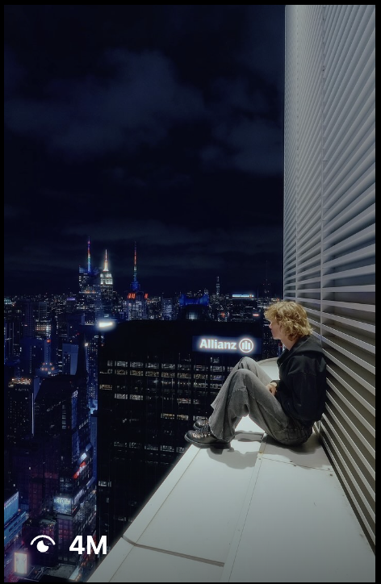

Shane Boyer films New York like nowhere else.
The POV filmmaker behind some of TikTok's most-shared New York footage — 2.5M followers, 11.7M-view brand films, and a rooftop-to-subway eye that Polaroid, YSL and Canada Goose keep booking.

4M viewsTikTok figures verified July 2026; Instagram (200K+) per DGTL. Top-video views are from Shane's own TikTok posts.
Shane Boyer makes you feel like you're standing on the ledge with him. For five years he has pointed a camera at New York — from Central Park rooftops to rain-slick subway platforms — and turned a skater's eye for the city into an audience of 2.5 million people who show up for every frame.
It's a specific kind of talent: not just being somewhere striking, but framing it so the feeling travels. Boyer's POV videos read like short films — colour-graded, patient, scored — and they move the way the best short-form does, on the strength of the shot rather than a trend. That's the asset a brand can't fake, and the reason his numbers keep compounding.
A city everyone has filmed, shot like no one else
New York is the most-filmed city on earth, which is exactly why Boyer stands out in it. He finds the angle nobody else climbs to — the ledge, the empty theatre, the platform as the train blurs past — and holds it long enough to feel like a memory. His audience doesn't watch for information; they watch for the mood. That's a rare, durable kind of attention.
A city everyone has filmed — shot like no one else has.
— The DGTL Influence view on Shane BoyerWhy brands keep booking him
Because his taste sells the product for him. His Polaroid Go film — a quiet POV on a set of train tracks — passed 11.7 million views because it looked like Shane, not like an ad. That's the whole thesis of creator-led work: hand the brief to someone an audience already trusts, and the recommendation reads as continuity. Boyer's brand partners have included Polaroid, YSL, Canada Goose, DJI and Meta Ray-Bans — each folded into his world rather than bolted onto it.
- POV that reads as authentic — the recommendation feels like the creator, not the campaign.
- A signature look: cinematic New York, colour-graded and patient.
- An audience that shows up for the mood, not just the moment.
- One creator delivering cinema-grade short-form, on schedule.
It's why a brand chasing a feeling — arrival, escape, the shot you wish you'd taken — is often better served by one Shane Boyer than a stack of generic placements. The reach is the headline; the taste is the reason it works.
The work
 POV
POV 11.7M
11.7M Fashion
Fashion Partner
Partner Banger
BangerA network people actually trust.
80+ vetted creators, matched to your brand — not bolted on. Let's scope an activation that moves real numbers.